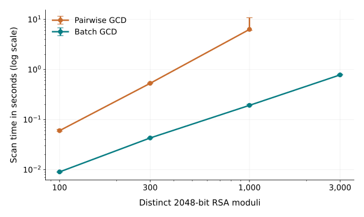

A relationship between public keys can expose a 2048-bit RSA key.
Batch detection, private-key recovery and verified RSA-OAEP decryption.
100distinct public moduli
5private keys recovered
6messages verified
THE EXPERIMENT
01
Public keys + ciphertextsOnly public inputs enter the attack
02
Batch GCDShared factors reveal vulnerable keys
03
Recover and decryptReconstruct private keys; verify OAEP plaintexts
04
Replace and rescanCheck the repaired key collection
Controlled local experiments · actual 2048-bit moduli
Algorithm reference: Heninger et al., Mining Your Ps and Qs, USENIX Security 2012, §3.3.
MEASURED PERFORMANCE
3,000 moduli scanned in 0.780 seconds
2048-bit RSA3 runs per conditionSame inputs · GMP backendMedian scan time

Observed min–max ranges across repeated runs.
Median scan time in seconds
Moduli
Pairwise
Batch
Scanner time includes validation, deduplication, arithmetic and fallback. Input/output, key generation, adapter conversion and decryption are excluded. A timed-out worker has no completed scan time.
FROM PUBLIC INPUTS TO VERIFIED RECOVERY
Recorded experiment
102 records. 100 distinct RSA moduli.
Two duplicate records are retained. Original factors and private keys stay outside the attack.
PUBLIC INPUT
100distinct 2048-bit moduli
Public (N, e)OAEP ciphertexts
No original private key is supplied.
OAEP · SHA-256 · MGF1-SHA-256
KEY REPLACEMENT
Fresh keys remove the observed shared factors
BEFORE REPLACEMENT5
factorable distinct moduli
→
AFTER RESCANNING0
shared factors detected
Collection-dependent
An isolated weak target exposes no shared factor without a related public key.
One weakness checked
No shared factor found does not establish security against other attacks.
Old exposure remains
Replacing a key cannot restore the secrecy of messages already compromised.
RESULTS & CONTRIBUTIONS
Key length cannot compensate for shared primes
Reliable, independent prime generation is essential to RSA security.
01
Detection engine
Pairwise baseline, product and remainder trees, deduplication, full-overlap fallback and explicit unresolved results.
02
Recovery and evaluation
2048-bit datasets, private-key reconstruction, OAEP checks, separate ground truth and repeated measurements.